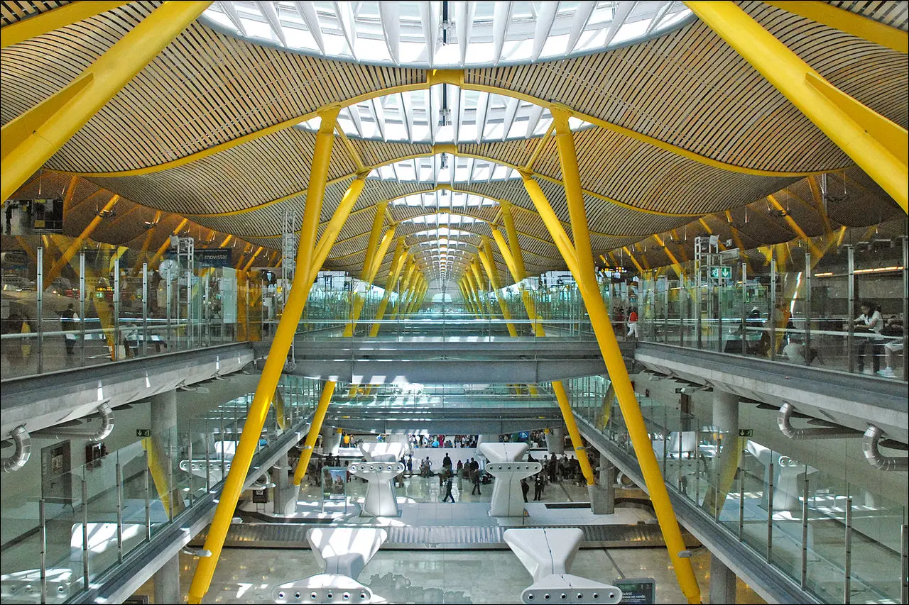

JAJAJAJJAJA
Europa
Norteamerica
Centroamerica
Sudamerica
Portada
País
Hora

Madrid
España
Hora local España
19 °C
:
:
Aeropuerto de Madrid-Barajas
Contenido
1
Información de contacto
2
Información de vuelos
3
Vuelos Madrid
4
Cómo llegar – Transporte
5
Custodia de equipajes
6
Instalaciones del aeropuerto de Madrid
7
Banco
8
Casas de cambio
9
Carta SIM en el aeropuerto MADRID – tarjeta SIM
10
Aeropuertos cercanos a Madrid-Barajas (MAD)
11
Aerolíneas y destinos
Vuelos
Divisas
Transporte
Hoteles
Vuelos
Divisas
Transporte
Hoteles